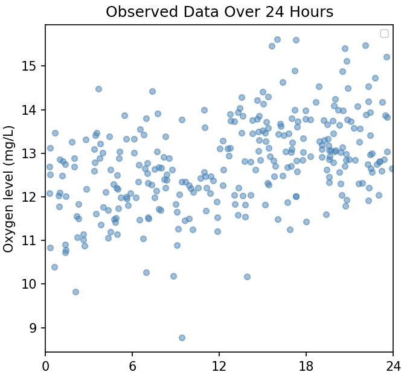

The Metropolis Algorithm
To follow this guide you only need to know what a Normal distribution is and what an integral is, by the end you will hopefully understand the Metropolis algorithm intuitively (the what, they why and the how), and learn about statistical modelling and Bayesian statistics along the way.
Introduction
Metropolis is a prince of an algorithm.
It's like a drunk person stumbling home, and as they wander erratically in a homeward direction they come to understand a complex problem beyond the capability of cogent scholars.
And it's the wandering, the erratic path, that can solve the impossible.
A problem
Suppose that we are monitoring the levels of dissolved oxygen (mg/L) in stream water. Samples collected at random times over a 24 hour period suggest that there was a change-point around midday:
We want to find out:
- when did the change-point most likely occur, and a credible interval (Bayesian equivalent of a confidence interval)
- what was the most likely magnitude of the change, and a credible interval
We're going to construct a Bayesian model for the data because:
- a Bayesian model allows us to answer questions like "what is the probability that the change-point occurred between 4:40pm and 4:50pm?"
- Bayesian approaches can provide a more complete understanding of complex (high dimensional) problems
- Bayesian modelling is a common use case for the Metropolis algorithm
The model
We propose a model for the oxygen level consisting of the unknown change-point time $\tau$ in fractional hours (e.g. 14.5 is 2:30pm) and two normal distributions of oxygen levels (mg/L) with unknown means $\mu_1$ (the mean oxygen level before $\tau$) and $\mu_2$ (the mean oxygen level after $\tau$). For this example (to keep the model parameters within 3 dimensions) we'll assume that the standard deviation $\sigma$ of oxygen levels is a known constant of +/- 0.9 mg/L. The model of oxygen level $l$ at time $t$ can be expressed as:
$$l_t \sim \begin{cases} \operatorname{Normal}(\mu_1, 0.9^2) & \text{if } t < \tau \\ \operatorname{Normal}(\mu_2, 0.9^2) & \text{if } t \ge \tau \end{cases}$$There exists some time τ where the mean oxygen level shifted. Before τ, observations come from $\operatorname{Normal}(\mu_1, 0.9^2)$. After τ, they come from $\operatorname{Normal}(\mu_2, 0.9^2)$.
The challenge is to estimate $\tau$, $\mu_1$ and $\mu_2$ given the data, ideally we would like to do this using Bayes Theorem.
Note
We assume that the model is true, the challenge is to find the correct parameters. For the purpose of our example the model will actually be true — the process which generates the observed data will be two Normal distributions and a change point. In a real world situation we might want to compare our model against other models, including a model which has no change point (the null hypothesis). Instead of claiming models are true, we say that there are models which are better or worse at describing and predicting reality.
Bayes Theorem
The data is constant and known. The real values of $\tau, \mu_1$ and $\mu_2$ are unknown and we will vary their hypothetical values to build a probability distribution for all possible hypotheses, where each unique combination of values for $\tau, \mu_1$ and $\mu_2$ form a hypothesis $\theta_i$ in the set of hypotheses under consideration $\theta$. This will allow us to find the most likely hypothesis (the most likely values of $\tau, \mu_1$ and $\mu_2$.)
Bayes Theorem relates three functions that depend on $\theta$ and a constant factor that involves the data alone.
$$p(\theta \mid \text{data}) = \frac{p(\text{data} \mid \theta) \cdot p(\theta)}{p(\text{data})}$$$p(\theta \mid \text{data})$ the posterior distribution — the probability distribution of hypotheses $\theta$ given (conditional on) the data — this is what we want to obtain.
$p(\text{data} \mid \theta)$ the likelihood function — the likelihood of observing the data conditional on a given hypothesis $\theta$.
Likelihood versus probability
If we held the hypothesis $\theta$ constant and calculated $p(\text{data} \mid \theta)$ for all possible $\text{data}$ sets then $p(\text{data} \mid \theta)$ would be a probability distribution because the integral over $\text{data}$ would always be equal to 1. But because we are holding $\text{data}$ constant and the integral over $\theta$ does not always equal 1, $p(\text{data} \mid \theta)$ expresses a likelihood (a score) not a probability, this is why we call it a likelihood function and not a probability distribution.
We can use ratios of likelihoods to express the probability of one outcome relative to another, but not their absolute probabilities — for that we would need to create a probability distribution by dividing the likelihood function by a normalisation factor — see the definition of $p(\text{data})$ below.
$p(\theta)$ the prior distribution — the probability distribution of hypotheses $\theta$ given our beliefs before seeing the data. Imagine that we haven't seen the data, in our state of ignorance what would our beliefs about time $\tau$ and the means $\mu_1$ and $\mu_2$ be? We need to express those beliefs as a probability distribution.
$p(\text{data})$ the evidence — how probable is the data in general regardless of which hypothesis is true? $p(\text{data})$ is calculated by integrating the probability of observing the data given a hypothesis weighted by the probability of the given hypothesis itself.
$$p(\mathrm{data}) = \int p(\mathrm{data}\mid \theta) \cdot p(\theta)\, d\theta$$This is the constant, normalisation factor which turns the product of the likelihood function and the prior probability distribution into the posterior probability distribution.
Bayes Theorem restated — Given the data, the probability of a hypothesis equals how likely the observed data would be if the hypothesis were true, multiplied by the plausibility of the hypothesis in general (without seeing the data), divided by how likely the observed data is overall (regardless of which hypothesis is true.)
Practical limitations on using Bayes Theorem
The stumbling block is often the integral for the evidence $p(\text{data})$.
Ideally we want to compute the exact values of integrals by deriving their analytical, closed-form solution.
E.g.
$$\int x^2 \, dx = \frac{1}3x^3 + C$$ $$\int_{2}^{5} x^2 \, dx = (\frac{1}3 \cdot 5^3 + C) - (\frac{1}3 \cdot 2^3 + C) = 39$$When finding a closed-form solution is analytically intractable we revert to numerical integration to find an inexact solution. The above example would be solved by computing ("the area under the curve"):
$$\int_{2}^{5} x^{2}\,dx \approx \sum_{i=1}^{n} f(x_i^{*})\,\Delta x$$Ideally we would obtain an analytical solution for $p(\text{data})$ by deriving a closed form solution of the integral:
$$p(\mathrm{data}) = \int p(\mathrm{data}\mid \theta) \cdot p(\theta)\, d\theta$$Which in our model is a three-dimensional integral:
$$p(\mathrm{data}) \;=\; \iiint p(\mathrm{data}\mid \tau,\mu_1,\mu_2)\, p(\tau)\, p(\mu_1)\, p(\mu_2)\, d\tau\, d\mu_1\, d\mu_2$$For our simple model, this is solvable but very often it isn't. As a minor alteration we could acknowledge that in reality oxygen levels cannot be negative and represent that condition by using a LogNormal instead of a Normal distribution. Modelling our prior beliefs about the means $\mu_1$ and $\mu_2$ with a LogNormal distribution would make $p(\text{data})$ analytically intractable.
Numerical integration (quadrature) would mean 1) splitting the 3-dimensional space into a grid of many blocks, 2) calculating $p(\mathrm{data}\mid \tau,\mu_1,\mu_2)\, p(\tau)\, p(\mu_1)\, p(\mu_2)$ for each grid block by plugging in the values of $\tau$, $\mu_1$ and $\mu_2$ at that grid block and multiplying by its volume, and 3) summing the calculation over all grid blocks.
With just three dimensions (parameters) that is again easily doable.
Numerical integration becomes infeasible as the number of model parameters increases, typically beyond 5–10. E.g. numerically integrating over 7 parameters with a low grid resolution of 20 points per parameter is 1.3 billion computations. Increase that to 10 parameters and it becomes 10 trillion computations.
Another limitation of numerical integration is that it struggles to capture a complex posterior distribution (e.g. skewed, many modes).
When $p(\text{data})$ is analytically intractable and numerical computation is too expensive or the posterior distribution is too complex, the other alternative is to use a Markov chain Monte Carlo algorithm like Metropolis.
The Metropolis algorithm
Recall Bayes Theorem:
$$p(\theta \mid \text{data}) = \frac{p(\text{data} \mid \theta) \cdot p(\theta)}{p(\text{data})}$$If we divide Bayes theorem for hypothesis $\theta_2$ by Bayes theorem for hypothesis $\theta_1$ the normalisation factor $p(\text{data})$ cancels out:
$$\begin{aligned} \frac{p(\theta_2\mid \text{data})}{p(\theta_1\mid \text{data})} &=\frac{p(\text{data} \mid \theta_2) \cdot p(\theta_2)}{p(\text{data})} \cdot\frac{p(\text{data})}{p(\text{data} \mid \theta_1) \cdot p(\theta_1)} \\ \\ &= \frac{p(\text{data}\mid \theta_2)}{p(\text{data}\mid \theta_1)} \cdot \frac{p(\theta_2)}{p(\theta_1)} \end{aligned}$$Some new terminology:
$$\underbrace{\frac{p(\theta_2\mid \text{data})}{p(\theta_1\mid \text{data})}}_{\text{posterior odds}}=\underbrace{\frac{p(\text{data}\mid \theta_2)}{p(\text{data}\mid \theta_1)}}_{\text{likelihood ratio}}\cdot\underbrace{\frac{p(\theta_2)}{p(\theta_1)}}_{\text{prior odds}}$$The posterior odds is the ratio of how much more likely one hypothesis is versus another (the ratio of their posterior probability densities). We can calculate this without ever needing to calculate the normalisation factor $p(\text{data})$.
The likelihood ratio is a measure of how strongly the evidence supports one hypothesis versus another.
The prior odds is how much more feasible one hypothesis is versus another in general, it's our prior belief without seeing the data.
The algorithm
- Select an initial current hypothesis $\theta_\text{current}$ by choosing values for parameters $\tau$, $\mu_1$ and $\mu_2$ anywhere in the model probability space (this initial starting position is often informed by the data).
- Propose a new hypothesis $\theta_\text{proposal}$: select new values for the parameters $\tau$, $\mu_1$ and $\mu_2$ by taking a random sample within a defined range around each of the existing values for $\tau$, $\mu_1$ and $\mu_2$ in $\theta_\text{current}$ (the range for each parameter is called a proposal width).
Calculate the posterior odds for $\theta_\text{proposal}$ over $\theta_\text{current}$.
$$\frac{p(\theta_\text{proposal}\mid \text{data})}{p(\theta_\text{current}\mid \text{data})}=\frac{p(\text{data}\mid \theta_\text{proposal})}{p(\text{data}\mid \theta_\text{current})}\cdot\frac{p(\theta_\text{proposal})}{p(\theta_\text{current})}$$-
In this step we choose to accept either $\theta_\text{proposal}$ or $\theta_\text{current}$ as hypothesis $\theta_\text{accepted}$:
- If $\theta_\text{proposal}$ is more likely than $\theta_\text{current}$ (posterior odds ≥ 1) then $\theta_\text{accepted}=\theta_\text{proposal}$
-
If $\theta_\text{proposal}$ is less likely (posterior odds < 1), we use a random number generator to accept one of the hypotheses by chance. The probability of accepting $\theta_\text{proposal}$ is set to the posterior odds and therefore the probability of accepting $\theta_\text{current}$ is set to 1 − posterior odds.
E.g. if the posterior odds = 0.8:
=> set an 80% chance of selecting $\theta_\text{accepted} = \theta_\text{proposal}$
=> set a 20% chance of selecting $\theta_\text{accepted} = \theta_\text{current}$
This is the crucial part of the algorithm: even though $\theta_\text{proposal}$ is less likely (80% as likely as $\theta_\text{current}$), there's an 80% chance that we'll accept it anyway
- Record $\theta_\text{accepted}$ (parameter values).
- Jump back to step 2), set $\theta_\text{current}$ to the value of $\theta_\text{accepted}$ and create a new $\theta_\text{proposal}$.
- Repeat this loop until there are enough (many!) records.
Each recorded hypothesis $\theta_\text{accepted}$ is a sample from an approximation to the posterior distribution and the samples converge to the true posterior distribution $p(\theta \mid \text{data})$ as the number of samples approaches infinity. This process allows us to construct the posterior distribution without ever knowing the $p(\text{data})$ normalisation factor.
It's the ability to jump to less likely locations in the hypothesis space (when the posterior odds < 1 and we accept $\theta_\text{proposal}$) that constructs the posterior distribution. If we always accepted the most likely hypothesis out of $\theta_\text{proposal}$ and $\theta_\text{current}$ we would create a speed running hill climb to the most likely hypothesis (mode) of the posterior distribution, although this point value is one of the things we want the process wouldn't give us the posterior distribution itself as it wouldn't sample the full probability space — we would have the mode but no estimation of uncertainty. A hill climb also has greater risk of getting stuck in a local maximum if the distribution has multiple modes, i.e. it wouldn't be able to find multiple modes in a multi modal distribution.
Worked example for oxygen levels
We need to derive the posterior odds equation used in the proposal step:
$$\underbrace{\frac{p(\theta_{\text{proposal}}\mid \text{data})}{p(\theta_\text{current}\mid \text{data})}}_{\text{posterior odds}}=\underbrace{\frac{p(\text{data}\mid \theta_\text{proposal})}{p(\text{data}\mid \theta_\text{current})}}_{\text{likelihood ratio}}\cdot\underbrace{\frac{p(\theta_\text{proposal})}{p(\theta_\text{current})}}_{\text{prior odds}}$$Natural logarithms
During this example we will be taking the natural logarithm of the equation for the posterior odds.
Probabilistic computing often involves multiplying fractional probabilities or probability densities many times over, and the result can get very small very fast — too small for the computer's representation of floating point numbers. For this reason, and because it often makes the mathematical representations simpler, calculations are done in log space.
Logarithm rules
$$\log(a \cdot b) = \log(a) + \log(b)$$ $$\log(a / b) = \log(a) - \log(b)$$Taking natural logs of both sides, the posterior odds equation becomes:
$$\begin{aligned} \ln p(\theta_\text{proposal} \mid \text{data}) - \ln p(\theta_\text{current} \mid \text{data}) &= \ln p(\text{data} \mid \theta_\text{proposal}) - \ln p(\text{data} \mid \theta_\text{current})\\\\ &+ \ln p(\theta_\text{proposal}) - \ln p(\theta_\text{current}) \end{aligned}$$1) The prior odds
$$\frac{p(\theta_\text{proposal})}{p(\theta_\text{current})}$$The prior odds is the ratio of the probability densities for our two hypotheses: the prior probability distribution for our model applied to each hypothesis.
$p(\theta)$ the prior distribution — the probability distribution of hypotheses $\theta$ given our beliefs before seeing the data.
What are our beliefs before seeing the data?
The time of the change-point $\tau$
We have no reason to believe that the change point occurring at time $\tau_1$ is more or less likely than any other time $\tau_2$. Therefore we will model our prior belief as all times are equally likely using a continuous uniform distribution for $\tau$ where $N$ is the total number of hours in the data.
$$\tau \sim \operatorname{Uniform}(0, N)$$The mean oxygen levels $\mu_1$ and $\mu_2$ before and after the change-point $\tau$
Prior to seeing the data we have no knowledge of the sign or the magnitude of the change, so we'll represent that state of ignorance by setting $\mu_1$ and $\mu_2$ to the same value.
For our belief about the most likely value of the mean we would draw from our experience, or general public knowledge, or historical data from the stream in question. For this experiment we'll set it to $\mu_1 = 15.0\text{ mg/L}$ and $\mu_2 = 15.0\text{ mg/L}$.
Our beliefs would also acknowledge that the values of $\mu$ would tail off the further we get from the most likely value. We have no reason to believe that the distribution is skewed, so we'll use a symmetrical distribution.
Under these conditions the Normal distribution would be a suitable representation of our prior beliefs. We'll choose a standard deviation of +/- 5.0 mg/L, this places our prior belief as being 95% confident that $\mu_1$ and $\mu_2$ are somewhere between 5.2 mg/L and 24.8 mg/L.
$$\mu_1 \sim \mathrm{Normal}(15.0, 5.0^2)$$ $$\mu_2 \sim \mathrm{Normal}(15.0, 5.0^2)$$Putting it together
Now we can construct the prior distribution $p(\theta)$ for our model.
Because the parameters in our prior distribution are independent (what we believe about $\tau$ has no impact on what we believe about $\mu_1$ or $\mu_2$) the prior distribution can be expressed as the product of the prior distributions of each model parameter (the multiplication rule for independent probabilities):
$$p(\theta) = p(\tau) \cdot p(\mu_1) \cdot p(\mu_2)$$$\tau$ is distributed uniformly over the time period of the data.
$$\tau \sim \operatorname{Uniform}(0, N)$$ $$p(\tau) = \frac{1}{24}$$The mean oxygen levels are Normally distributed:
$$\mu_1 \sim \mathrm{Normal}(15.0, 5.0^2)$$ $$\mu_2 \sim \mathrm{Normal}(15.0, 5.0^2)$$ $$p(\mu)=\frac{1}{\sigma\sqrt{2\pi}}\cdot\exp\!\left(-\frac{(\mu-M)^2}{2\sigma^2}\right),\quad \sigma=5.0,\; M=15.0$$ $$p(\mu_1)=\frac{1}{5.0\sqrt{2\pi}}\cdot\exp\!\left(-\frac{(\mu_1-15.0)^2}{2\cdot5.0^2}\right)$$ $$p(\mu_2)=\frac{1}{5.0\sqrt{2\pi}}\cdot\exp\!\left(-\frac{(\mu_2-15.0)^2}{2\cdot5.0^2}\right)$$The prior distribution becomes:
$$\begin{aligned} p(\theta) &= p(\tau) \cdot p(\mu_1) \cdot p(\mu_2)\\\\ &=\frac{1}{24}\cdot\frac{1}{5.0^2\cdot{2\pi}}\cdot\exp\!\left(-\frac{(\mu_1-15.0)^2}{2\cdot5.0^2}\right)\cdot\exp\!\left(-\frac{(\mu_2-15.0)^2}{2\cdot5.0^2}\right) \end{aligned}$$Now we can express the prior odds (the constant factor cancels out):
$$\frac{p(\theta_\text{proposal})}{p(\theta_\text{current})} = \frac{ \exp\!\left(-\frac{(\mu_1^{\text{proposal}}-15.0)^2}{2\cdot5.0^2}\right)\cdot\exp\!\left(-\frac{(\mu_2^{\text{proposal}}-15.0)^2}{2\cdot5.0^2}\right) }{ \exp\!\left(-\frac{(\mu_1^{\text{current}}-15.0)^2}{2\cdot5.0^2}\right)\cdot\exp\!\left(-\frac{(\mu_2^{\text{current}}-15.0)^2}{2\cdot5.0^2}\right) }$$We want this in log form:
$$\begin{aligned} \ln \! \left(\frac{p(\theta_\text{proposal})}{p(\theta_\text{current})}\right) &= \ln p(\theta_\text{proposal}) - \ln p(\theta_\text{current}) \\\\ &= \begin{aligned}[t] &-\frac{(\mu_1^{\text{proposal}}-15.0)^2}{2\cdot5.0^2} -\frac{(\mu_2^{\text{proposal}}-15.0)^2}{2\cdot5.0^2} \\\\ &+\frac{(\mu_1^{\text{current}}-15.0)^2}{2\cdot5.0^2} +\frac{(\mu_2^{\text{current}}-15.0)^2}{2\cdot5.0^2} \end{aligned} \end{aligned}$$The above equation for the feasibility of one hypothesis versus another makes intuitive sense.
We stated that we have no reason to believe that any change-point time $\tau$ is more likely than another: $\tau$ doesn't appear in the equation.
We stated that we have no reason to believe that the pre- change-point mean $\mu_1$ is greater or less than the post- change-point mean $\mu_2$ so we set a ballpark guess of 15.0 mg/L for both. The feasibility of a hypothesis then depends only on how far its values of $\mu_1$ and $\mu_2$ are from 15.0 mg/L.
Note on the properties of natural logarithms
$$\ln \! \left(\frac{p(\theta_\text{proposal})}{p(\theta_\text{current})}\right) \begin{cases} < 0, & 0 < \frac{p(\theta_\text{proposal})}{p(\theta_\text{current})} < 1,\\ = 0, & \frac{p(\theta_\text{proposal})}{p(\theta_\text{current})} = 1,\\ > 0, & \frac{p(\theta_\text{proposal})}{p(\theta_\text{current})} > 1. \end{cases}$$The further away from 15.0 mg/L that the means for $\theta_\text{proposal}$ become, the less positive or more negative the right-hand side of the log-form equation becomes. This implies a smaller value for the prior odds in the left-hand side, expressing reduced belief in $\theta_\text{proposal}$ relative to $\theta_\text{current}$:
$$\frac{p(\theta_\text{proposal})}{p(\theta_\text{current})}$$Equivalently, the further away from 15.0 mg/L that the $\theta_\text{current}$ means become, the less negative or the more positive the right-hand side of the equation and the larger the value of the prior odds, expressing increasing belief in $\theta_\text{proposal}$ versus $\theta_\text{current}$.
2) The likelihood ratio
$$\frac{p(\text{data}\mid \theta_\text{proposal})}{p(\text{data}\mid \theta_\text{current})}$$The likelihood ratio is the ratio of the likelihood scores for our two hypotheses given the data: the likelihood function for our model applied to each hypothesis.
$p(\text{data} \mid \theta)$ the likelihood function — the likelihood of observing the data conditional on a given hypothesis $\theta$.
Our model for the data is that before $\tau$ the oxygen level follows a Normal distribution with mean $\mu_1$ and after $\tau$ it follows a Normal distribution with mean $\mu_2$.
Recall that we said for the purpose of this example, $\sigma$ is a constant and we know its true value of +/- 0.9 mg/L.
$$l_t \sim \begin{cases} \operatorname{Normal}(\mu_1, 0.9^2) & \text{if } t < \tau \\ \operatorname{Normal}(\mu_2, 0.9^2) & \text{if } t \ge \tau \end{cases}$$$l_t$ is a continuous variable representing the oxygen level at any time $t$. We want the probability density for each observation $\text{data}_i$ at time $t_i$ given the model parameters $\tau$, $\mu_1$ and $\mu_2$, which is just the Normal probability density function:
$$f(\text{data}_i \mid \tau,\mu_1,\mu_2)= \begin{cases} \dfrac{1}{\sqrt{2\pi}\cdot0.9}\exp\!\left(-\dfrac{(\text{data}_i-\mu_1)^2}{2\cdot0.9^2}\right), & \text{if } t_i < \tau,\\[8pt] \dfrac{1}{\sqrt{2\pi}\cdot0.9}\exp\!\left(-\dfrac{(\text{data}_i-\mu_2)^2}{2\cdot0.9^2}\right), & \text{if } t_i \ge \tau. \end{cases}$$The likelihood function then is the product of all the probability densities for the complete set of observations.
$$\begin{aligned} p(\text{data} \mid \theta^{(\tau, \mu_1, \mu_2)}) &= \prod_{i}f(\text{data}_i \mid \tau,\mu_1,\mu_2) \\ &=\prod_{i} \dfrac{1}{\sqrt{2\pi}\cdot0.9} \cdot \prod_{i:\,t_i<\tau} \exp\!\left(-\frac{(\text{data}_i-\mu_1)^2}{2\cdot0.9^2}\right)\cdot \prod_{i:\,t_i\ge\tau}\exp\!\left(-\frac{(\text{data}_i-\mu_2)^2}{2\cdot0.9^2}\right) \end{aligned}$$Now we can express the likelihood ratio:
$$\frac{p(\text{data}\mid \theta_\text{proposal})} {p(\text{data}\mid \theta_\text{current})} = \frac { \prod_{i:\,t_i<\tau^\text{proposal}}\exp\!\left(-\frac{(\text{data}_i-\mu_1^\text{proposal})^2}{2\cdot0.9^2}\right)\cdot \prod_{i:\,t_i\ge\tau^\text{proposal}}\exp\!\left(-\frac{(\text{data}_i-\mu_2^\text{proposal})^2}{2\cdot0.9^2}\right) }{ \prod_{i:\,t_i<\tau^\text{current}}\exp\!\left(-\frac{(\text{data}_i-\mu_1^\text{current})^2}{2\cdot0.9^2}\right)\cdot \prod_{i:\,t_i\ge\tau^\text{current}}\exp\!\left(-\frac{(\text{data}_i-\mu_2^\text{current})^2}{2\cdot0.9^2}\right) }$$We take logs of both sides:
$$\begin{aligned} \ln \! \left( \frac {p(\text{data}\mid \theta_\text{proposal})} {p(\text{data}\mid \theta_\text{current})} \right) &= \sum_{i:\,t_i<\tau^\text{current}} \! \frac{(\text{data}_i-\mu_1^{(\text{current})})^2} {2\cdot0.9^2} + \sum_{i:\,t_i\ge\tau^\text{current}} \! \frac{(\text{data}_i-\mu_2^{(\text{current})})^2} {2\cdot0.9^2} \\\\ &- \sum_{i:\,t_i<\tau^\text{proposal}} \! \frac{(\text{data}_i-\mu_1^{(\text{proposal})})^2} {2\cdot0.9^2} - \sum_{i:\,t_i\ge\tau^\text{proposal}} \! \frac{(\text{data}_i-\mu_2^{(\text{proposal})})^2} {2\cdot0.9^2} \end{aligned}$$This result again makes intuitive sense. Recall that for the prior odds ratio, the further that our proposed mean $\mu_1^{(\text{proposal})}$ was from our prior beliefs, the smaller the odds ratio expressing reduced belief in $\theta_\text{proposal}$. The same thing is happening here, except it's the distance of $\mu_1^{(\text{proposal})}$ from the $\text{data}$.
3) The posterior odds
Now we have everything we need to calculate the posterior odds used in step 3) of the Metropolis algorithm.
$$\underbrace{\frac{p(\theta_{\text{proposal}}\mid \text{data})}{p(\theta_\text{current}\mid \text{data})}}_{\text{posterior odds}}=\underbrace{\frac{p(\text{data}\mid \theta_\text{proposal})}{p(\text{data}\mid \theta_\text{current})}}_{\text{likelihood ratio}}\cdot\underbrace{\frac{p(\theta_\text{proposal})}{p(\theta_\text{current})}}_{\text{prior odds}}$$Taking logs:
$$\begin{aligned} \ln p(\theta_\text{proposal} \mid \text{data}) - \ln p(\theta_\text{current} \mid \text{data}) &= \ln p(\text{data} \mid \theta_\text{proposal}) - \ln p(\text{data} \mid \theta_\text{current})\\\\ &+ \ln p(\theta_\text{proposal}) - \ln p(\theta_\text{current}) \end{aligned}$$Substituting our log form expressions for the likelihood ratio and the prior odds:
$$\begin{aligned} \ln p(\theta_\text{proposal} \mid \text{data}) - \ln p(\theta_\text{current} \mid \text{data}) &= \sum_{i:\,t_i<\tau^\text{current}} \! \frac{(\text{data}_i-\mu_1^{(\text{current})})^2} {2\cdot0.9^2} + \sum_{i:\,t_i\ge\tau^\text{current}} \! \frac{(\text{data}_i-\mu_2^{(\text{current})})^2} {2\cdot0.9^2} \\\\ &- \sum_{i:\,t_i<\tau^\text{proposal}} \! \frac{(\text{data}_i-\mu_1^{(\text{proposal})})^2} {2\cdot0.9^2} - \sum_{i:\,t_i\ge\tau^\text{proposal}} \! \frac{(\text{data}_i-\mu_2^{(\text{proposal})})^2} {2\cdot0.9^2} \\\\ &+\frac{(\mu_1^{\text{current}}-15.0)^2}{2\cdot5.0^2} +\frac{(\mu_2^{\text{current}}-15.0)^2}{2\cdot5.0^2} \\\\ &-\frac{(\mu_1^{\text{proposal}}-15.0)^2}{2\cdot5.0^2} -\frac{(\mu_2^{\text{proposal}}-15.0)^2}{2\cdot5.0^2} \end{aligned}$$The algorithm revisited
Now we know how to compute the posterior odds we can run the algorithm. Recall the process:
- Choose an initial hypothesis for $\theta_\text{current}$ anywhere in the parameter space, e.g.
- $\mu_1^\text{current}$ = 10.0 mg/L
- $\mu_2^\text{current}$ = 15.0 mg/L
- $\tau^\text{current}$ = 11.25 hours
- Choose a proposal hypothesis $\theta_\text{proposal}$ at random within a region around $\theta_\text{current}$. Any distribution can be used to generate the parameters provided that it's symmetrical (asymmetrical distributions can be used but that requires using a correction term called the Hastings correction, which is beyond the scope of this guide — maybe I'll add it later). Common choices are the Normal, Uniform and Cauchy distributions. E.g. using a Uniform distribution with proposal widths of +/- 2 mg/L for the means and +/- 2 hours for $\tau$ might suggest:
- $\mu_1^\text{proposal}$ = 11.2 mg/L
- $\mu_2^\text{proposal}$ = 14.7 mg/L
- $\tau^\text{proposal}$ = 12.81 hours
- Using the above and the observations in $\text{data}$ calculate the logarithm of the posterior odds using the equation at the end of the previous section.
-
Decide whether to accept $\theta_\text{current}$ or $\theta_\text{proposal}$ as the value of $\theta_\text{accepted}$. Recall that we accept $\theta_\text{proposal}$ if the posterior odds $\ge1$. We've calculated the logarithm of the posterior odds, so that means we accept $\theta_\text{proposal}$ if the log value $\ge0$.
If the logarithm of the posterior odds is negative, implying $0\le\text{posterior odds}<1$, we need to accept one of the hypotheses at random. We use an RNG to select a number between 0 and 1 and take the logarithm of that number. If the logarithm of the random number is less than the logarithm of the posterior odds we accept $\theta_\text{proposal}$, otherwise we accept $\theta_\text{current}$. This is equivalent to selecting $\theta_\text{proposal}$ if the (non-log) random number is less than the (non-log) posterior odds.
- Record $\theta_\text{accepted}$ as a sample from the posterior distribution
- Jump back to step 2), setting $\theta_\text{current}$ to the value of $\theta_\text{accepted}$
- Repeat 2–6) until you have enough samples that the posterior distribution is stable.